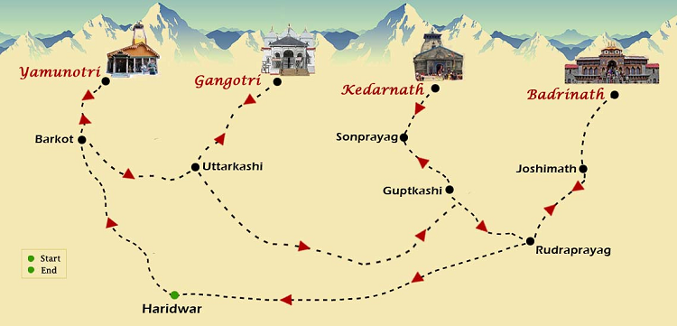

Overview
The Chardham Yatra is a pilgrimage to the four sacred shrines in Uttarakhand, namely Yamunotri, Gangotri, Kedarnath, and Badrinath.
Uttarakhand, also known as Devbhoomi or the Land of Gods, is home to numerous temples and welcomes devotees all year round. Among the countless religious sites and circuits that devotees visit in Uttarakhand, one of the most prominent is the Char Dham Yatra. This Yatra or pilgrimage is a tour of four holy sites - Yamunotri, Gangotri, Kedarnath and Badrinath – nestled high up in the Himalayas. In Hindi, 'char' means four and 'dham' refers to religious destinations
Yatra Routes
There are specific routes to visit each of the Chardham destinations. The yatra usually begins from Yamunotri and proceeds to Gangotri, Kedarnath, and finally, Badrinath.
One of the Best Route for chardham Yatra is
Haridwar -> Barkot -> Yamunotri -> Uttarkashi –> Gangotri –> Guptakashi –> Kedarnath –> Joshimath –> Badrinath.
History of Chardham Temples
1.History of Yamunotri
Yamunotri is where the second most holy river of India, the River Yamuna, takes birth. It is believed that bathing in its water cleanses all sins and protects from untimely and painful death.
The shrine of Yamunotri is believed to be built in 1839 by the king of Tehri, Naresh Sudarshan Shah. Besides the Yamuna Devi (goddess), the idol of Ganga Devi too is housed in the revered temple.
Legend: Yamuna Goddess is believed to be Sun's daughter and twin sister of Yama (the god of death). Sage Asit Muni lived here, and when he was unable to go to Gangotri, a stream of Ganga started to flow across the steam of Yamuna.
2.History of Gangotri
Gangotri Dham is dedicated to Goddess Ganga, who is said to have descended on earth to absolve the sins of human kind. The river originates at Gaumukh from the Gangotri glacier.
The original temple of Gangotri was built by Amar Singh Thapa, a Gurkha general, in the early 19th century.
Legend: King Sagar undertook an Ashwamedha Yagna, and his 60,000 sons disturbed sage Kapila, turning them into ashes. Anshuman prayed to Goddess Ganga, and later, Bhagirath's meditation made Ganga come down to earth.
3.History of Kedarnath
Kedarnath, situated in the Rudraprayag district of Uttarakhand, is the most remote pilgrimage spot in the yatra. The temple was originally built by Pandavas, and Adi Shankaracharya got the present structure constructed in the 8th century.
Legend: Pandavas were searching for Lord Shiva to absolve themselves from sins. Lord Shiva converted himself into a bull, and different parts of the Lord came up at different parts - hump at Kedarnath, arms at Tunganath, navel at Madhya-Maheshwar, face at Rudranath, and hair emerged at Kalpeshwar.
4.History of Badrinath
Badrinath is considered one of the most holy places in Hindu religion. Adi Shankaracharya found the idol of Lord Badri in Alaknanda River and put it up in a cave near the Tapt Kund.
In the 16th century, a Garhwal King got the temple erected, which has been renovated many times as a result of natural calamities. The beauty of Badrinath Dham is further enhanced with the glorious background of Neelkanth peak.
Legend: One of the legends states that Lord Vishnu went to meditate as an act of penance, and Goddess Laxmi became a berry tree to shade him. Another tale states that Badrinath used to be the realm of Shiva, and Vishnu tricked Shiva into leaving the site.
Travel Tips
- Plan your journey well in advance.
- Check weather conditions before traveling.
- Carry essential items like warm clothing, medicines, etc.